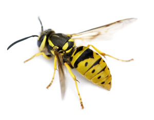
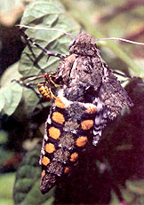

One day while I was out taking a leisurely stroll, I was suddenly surrounded by what seemed to be every yellow jacket within a square-mile radius. Suspecting the pesky little critters were more interested in my sugary beverage than they were in me, I slowly set the can of cola on the ground, then fled the scene. How does one get rid of yellow jackets?
My experience with the wasps put me off of any activities that could involve stinging insects until my husband taught me that giving the wasps their own little serving of food and drink encouraged them to leave us humans alone. For a handy yellow jacket trap, put a drop of soda and a dollop of your sandwich meat at the opposite end of the table, cover your drink with one hand (substituting iced tea also helps) and gently wave your other hand over your food until the critters discover the smaller, undisturbed meal. You can enjoy your own lunch, while the bees and wasps enjoy theirs.
Barbara Santhuff
Belleview, Missouri
Great tip, Barbara. Although they can be a nuisance, yellow jackets and other wasps are actually very beneficial in the garden. The wasps feed on harmful pests, such as the sphinx moth. Sphinx moths, also called hummingbird moths, are fun to watch as they feed on flower nectar in the evenings, but the eggs they lay hatch into the infamous tomato and tobacco hornworms, which damage garden crops. Yellow jackets also feed on grasshoppers, flies, caterpillars and aphids.
Yellow jacket populations sometimes explode in the summer, and the insects can become extremely aggressive. Never disturb their nests (usually made in the ground). If anyone is stung, everyone should go inside because the wasps release an alarm scent that prompts others to sting. If you must, you can trap yellow jackets with a homemade trap made by drilling three eighth-inch holes in a plastic two-liter bottle, then baiting it with 10 percent molasses and water, a pinch of yeast and a few drops of dish detergent. Happy picnicking! - MOTHER
|
 PHOTO: ISTOCKPHOTO/MELINDA FAWVER Yellow jackets and bees have a habit of ruining al fresco meals. Here's how to distract them. |
 DAVID CAVAGNARO Sphinx moths can be bad news for your garden. Yellow jackets help keep their populations under control. |
|